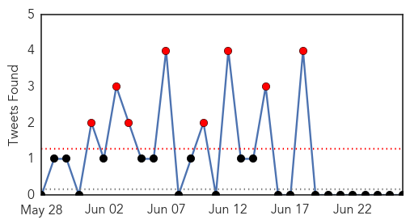
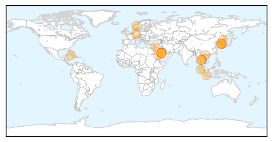

30 Day Trends
Web: 25 alerts, 3 warnings
Twitter: 8 alerts, 0 warnings
Top Articles:
- 1.000
- News Scan for Jun 26, 2015
- 0.999
- MERS virus Is WHO doing enough? The Nation
- 0.998
- Asian outbreak sparks MERS concerns
- 0.998
- 45,000 individuals screened for MERS symptoms
- 0.997
- HCM City holds MERS-CoV drill
- 0.996
- Two MERS suspects quarantined in Phuket
- 0.990
- S. Korean MERS patient in China recovered, released from hospital
- 0.990
- Hanoi broadens efforts to prevent MERS-CoV
- 0.989
- Doctor's illness pushes Korea's MERS total to 181
- 0.987
- Patient recovering well: doctors
- 0.986
- S. Korean MERS patient in China recovered, released from hospital
- 0.950
- Russian tourist quarantined in Vietnam tests negative for MERS
- 0.949
- MERS weak spot revealed
- 0.943
- الاخبار المصورة
- 0.877
- Hajj pilgrims should get vaccinated against Mers-COV: Jusuf Kalla
- 0.872
- Airports to install thermo scanners to detect MERS: Director
- 0.847
- Airports to Step up MERS Vigil
- 0.809
- No coronavirus cases among Umrah pilgrims, says Health Ministry
Top Tweets:
-
No tweets found for Jun 26, 2015
Web/News Articles

Tweets
Article Locations
Article Confidences